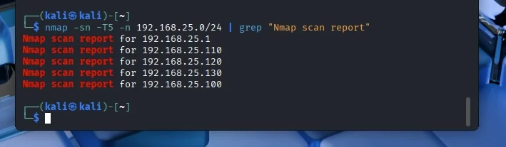

Cybersecurity · authorised lab
Penetration Testing Lab Assessment
A report on a time-bounded assessment of an isolated five-virtual-machine lab, focused on documenting findings and their security implications.
Overview
This assessment took place in a controlled lab environment on 12 December 2025. The scope covered five virtual machines and several common security-testing themes, including information gathering, application weaknesses and privilege management.
The work was documented as an academic lab exercise. This case study keeps the discussion at a high level and omits exploit commands, credentials, flags and other lab-only hints.
My contribution
- Worked within the defined lab scope and recorded observations in a written report.
- Reviewed the environment across host discovery, service exposure, application security and privilege boundaries.
- Considered how findings should be reported with evidence and context rather than treated as isolated technical wins.
How it works
The assessment followed the lab scope and gathered evidence about reachable hosts and exposed services before examining the assigned security themes.
Findings were recorded in the report with enough context for the exercise. This public page does not include credentials, flags, exploit commands or detailed attack procedures.
Key decisions
Keep testing inside the authorised range
Choice: Limit activity to the virtual machines and network provided for the exercise.
Why: A clear scope is essential to responsible testing and avoids affecting systems outside the lab.
Trade-off: The results apply only to that lab environment and should not be generalised to other systems.
Report impact, not just tool output
Choice: Summarise the assessment as findings and security implications rather than publishing reusable exploit steps.
Why: A useful report should help an owner understand risk and remediation without exposing lab secrets.
Trade-off: This public summary intentionally contains less detail than the private academic report.
Results
The exercise produced a written account of the lab assessment and its observations.
Only a non-sensitive host-discovery image is included. Screenshots that could reveal credentials, flags or operational exploit details have been excluded.
Limits and next steps
A short, isolated lab exercise is not a comprehensive security assessment and does not establish how a real organisation would respond.
Next, I would prioritise findings by likelihood and impact, map them to clear remediation advice, and retest only within an explicitly authorised scope.
Project images
Select an image to view it at a larger size.


Tools and methods
The page is a deliberately high-level summary of an academic lab report. Sensitive lab screenshots and exploit details are not reproduced here.